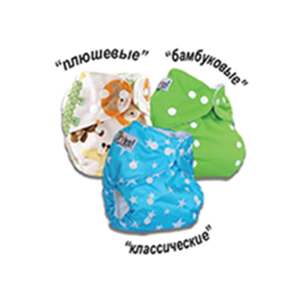

Ассортимент
 В ассортименте GlorYes имеется 3 вида подгузников - классические (PUL+микрофлис), плюшевые (велюр + микрофлис) и бамбуковые (PUL+ бамбук). Каждый вид имеет свои особенности: - в классических подгузниках в качестве внутреннего слоя, соприкасающегося непосредственно с кожей малыша, используется специальный материал микрофлис, который пропускает влагу к вкладышу, но сам ее не впитывает, что создает ощущение сухости; - плюшевые подгузники обладают теми же свойствами, что и классические, только в качестве внешнего слоя используется ламинированный велюр, необычайно нежный и мягкий, при этом хорошо дышащий и не пропускающий влагу; - бамбуковые подгузники отличает внутренний слой, состоящий из натурального бамбукового полотна, что помогает восстанавливать кожу малыша после всяких раздражений и почти не пахнет после использования.
Покажем наглядно основные составляющие многоразовых подгузников GlorYes на примере классического подгузника.